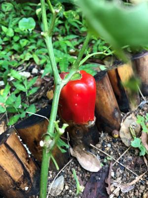
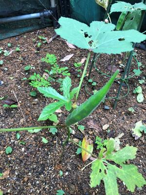
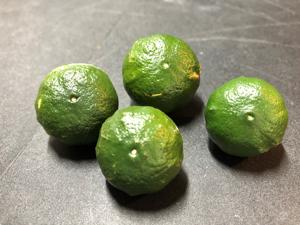

うるがいの話 ある日
最新:
野良犬
うるがいとは 前提知識です
画像をクリックすると『うるがいの話』サイトを表示します


うるがい(ｳﾙｶﾞｲ urugai)とは、『もずくがに』の名前でとても大きくなります。
たながー（ﾀﾅｶﾞｰtanagaa）とは手長えびのことで、何種類かあり大きいのは車
エビぐらいになります。
ぶながー(bunagaa)とは、赤い髪の毛、赤い身体、そして身長は１ｍ２０ｃｍ
ぐらい、川の蟹を食べているの目撃された。場所は沖縄県国頭郡大宜味村のと
ある村僕の隣近所に住んでいる爺さんから、聞いた話です。
2021年06月25日 (金）野良犬
16:15



夕方、ジョギングコースに霊園の公園を抜ける。そこにはウオーキングする常
連の叔母さんがいる。あるとき、私に『この犬、野良犬ですかね』と尋ねる。
見ると、中型の野良犬がうろついていた。ええ、そうでしょうねと軽く答えた
今日は、午後から雨が降る予報なので１１時前からランをすることに、霊園の
所に来ると、作業着を着た捕獲する大きな網を持った人たちが、そこらかしこ
といた。ん！、これって犬猫の捕獲？、６，８名ほどの中の一番長老らしき人
に野良犬の捕獲ですか、と尋ねると静かにうなずいた。初めて目撃した、ラン
から戻り、彼らは保健所の人か、とネットで調べると『動物愛護管理センター
』というところに平成１８年度から移ったとあった。そして、タイムスの記事
には『那覇市、初めて犬の殺処分ゼロに保護92匹のうち81匹は飼い主に返還
11匹は譲渡（２０２０年度）』とあった。昨日も見かけたあの野良犬は、もう
会えないかも、ただ殺されることはなさそうだ。ランから戻り、暫くすると激
しいにわか雨が降った。